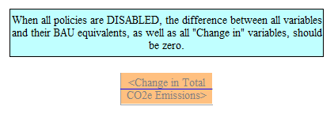
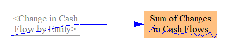
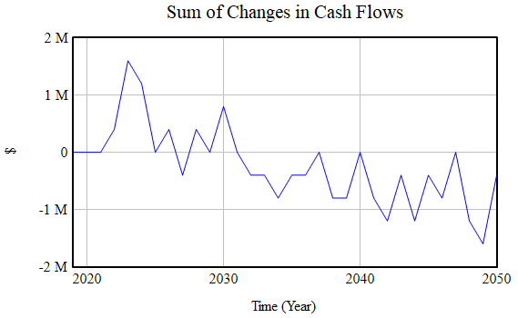
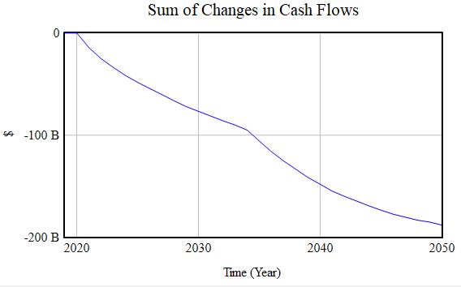

Intended Audience
The debugging assistance sheet is a tool for developers who edit the Energy Policy Simulator (EPS) core model file, EPS.mdl. If you are interested in running the model, analyzing the outputs, changing the input data, or swapping the input data to create an EPS version for a new country or region, you do not need to use the Debugging Assistance sheet. It is only useful for core model development.
Under the EPS’s open source license, anyone has the legal right to create a derivative EPS.mdl file, if they comply with the license terms. However, we do not recommend that users edit EPS.mdl, because Energy Innovation maintains the model and regularly fixes bugs and adds new features. If you create a customized version of EPS.mdl, it will become orphaned, as the main model development line moves on. Then, if you ever want to take advantage of new features or bug fixes that came out in EPS releases that came out after you made your modifications, you will have to discard your modifications and adopt the latest official EPS release, or you will need to re-create your modifications by hand.
Also, it is easy to edit EPS.mdl incorrectly. Without considerable familiarity with the model, you may make edits that appear to work on the surface, but violate some of the model’s underlying assumptions or requirements, breaking things, particularly in regard to the handling of costs, savings, cash flows, and other financial impacts.
If there is a feature the EPS does not have, but you need for your project, you may consider suggesting it to us. You can reach us at policy@energyinnovation.org.
Debugging Functionality
The Debugging Assistance sheet essentially tests for a variety of conditions that should always be true:
-
When all policy levers are disabled, the change in emissions (of all pollutants, in all sectors) should be zero. That is, when there are no policies enabled, the policy case should equal the BAU case.
-
No matter which policies are enabled (if any), the sum of all changes in direct (first-order) cash flows should equal zero. This is true because whenever an actor pays money, someone else must receive that money. Hence, all negative cash flows for one actor are balanced by positive cash flows for other actor(s).
-
Partitioning (on the Cross-Sector Totals sheet) should not result in an increase or decrease in the amount of money being partitioned.
-
All changes in government cash flow should be accounted for by some combination of the Government Revenue Allocation (GRA) mechanisms, in the input-output model.
-
All changes in cash flows for all entities should equal these cash flows’ contributions to change in output once they have been allocated to ISIC codes, and after accounting for cash flows sent to foreign entities or handled through deficit spending.
-
All expenses and all revenues (so, hence, all cash flows) assigned to the “non-energy industries” cash flow entity must equal the total of these expenses, revenues, and cash flows when distributed among ISIC codes.
Checking to ensure these things sum to zero helps catch bugs that a developer may introduce, such as if a cash flow change was added somewhere and not properly accounted for elsewhere, or an allocation step doesn’t fully allocate or over-allocates the cash flow change being allocated.
Testing Change in Pollutants
To test that the change in pollutant emissions is zero when policies are disabled, simply run the model, then examine the contents of the “Change in Total CO2e Emissions” variable in the upper left, as shown in the following screenshot:

In the event that this variable has any non-zero values, first check to make sure that all policies are disabled. (This is the default, if you run the model without adjusting any policy levers.) If all policies are disabled and there is still a non-zero result for this variable, you can check the sector-specific totals below to determine which sector(s) are the source of the difference between the policy and BAU cases. Once you have identified the problematic sector(s), you must then examine their “Main” and “BAU” sheets to track down the problem. Problems with inequality of the policy and BAU cases when all policy levers are disabled usually stem from a change made to a “Main” sheet that was accidentally omitted from a corresponding “BAU” sheet.
Note that by default, changes in electricity price affect demand in the transportation, buildings, and industry sectors, and changing demand affects electricity price. Therefore, an inequality in one sector can cause inequalities to appear in other sectors, even if those other sectors are structurally sound. There are a few options you may consider to prevent this effect from interfering with your ability to find the bug.
-
First, the change in the problematic sector is often of a larger magnitude than the change in other sectors, which are just feeling the effects of slight differences in electricity prices.
-
Second, there is a one-year delay in the adjustment of electricity price in response to policy effects or changes in demand, so sometimes the problematic sector will show a deviation that starts one year earlier than the deviation in other sectors.
-
Finally, you can disable certain feedback loops, to help you isolate the effects of the bug in a particular sector. On the
Control Settingssheet, set the variableBAEPAbCiPC Boolean Are Energy Prices Affected by Changes in Production Coststo zero and the variableBDMFL Boolean Disable Macroeconomic Feedback Loopsto one.
Testing Sums of Cash Flow Changes
To test that the sum of all cash flows total zero, enter SyntheSim mode and load one of the included reference scenarios - ideally one containing a large diversity of policies. The sum of Changes in Cash Flows should be approximately zero, irrespective of which policies are enabled and their settings.
Due to rounding error in Vensim, when policies are enabled, the sum will not quite equal zero. It will tend to bounce around chaotically, usually within +/- $5 million of zero. For example, here is the relevant structure, shown with a policy package that contains many enabled policies:

Below, you can see a graph of the “Sum of Changes in Cash Flows” variable (for this example policy package):

This is a good result. Variance is chaotic and stays within +/- $1.5M of zero. This is an indication that the variance is due to rounding error, rather than to bugs in the model’s cash flow calculations. The slight downward trend is not large enough to indicate the presence of a bug. (Rounding error can have a systematic bias in Vensim that can account for subtle trends within the noise.)
A result that indicates the presence of a bug will tend to be a clear trend with little if any noise visible, and it will generally exceed +/- $5 million (often by a large margin- usually in the billions of dollars). This usually means that a new policy cost relationship was introduced into one of the “cash flow” sheets, but the inverse cash flow was not applied to the recipient of the dollars spent due to this new policy cost relationship (or the would-be recipient, in the case of dollars that are not spent due to the policy). For example, here is a cash flow debugging graph that clearly indicates the presence of a bug:

Noise is not visible, and the sum gradually comes to be almost $200 billion away from the zero line.
In the event there is a bug, you can examine the sector-specific cash flow totals to determine where the problem(s) may lie. All of these financial totals (orange-colored variables) should equal zero, after accounting for chaotic variance due to rounding error. (When a cash flow is generated in any sector, the recipient of that cash flow is also assigned within that sector. This is why the same actor, such as “government,” has cash flows generated by tax receipts separately from every sector that involves taxes. This is what allows us to test each sector independently for a total cash flow summing to zero.)
Other orange-colored totals work similarly and can point out bugs that you may have introduced in other parts of the EPS.